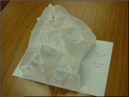
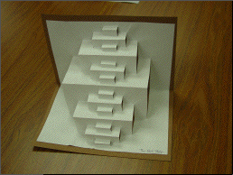
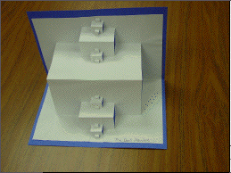
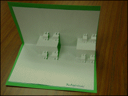
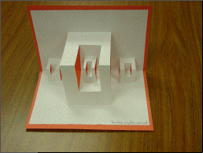
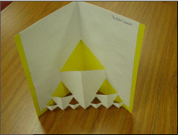
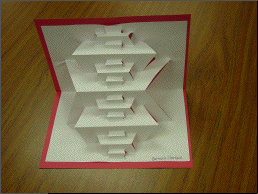
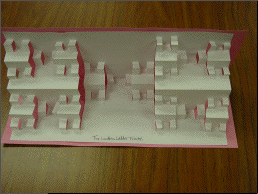

Here are somepictures from Tova Feldmanstern's and Jennifer Michelstein's spring 03 project. In addition to making the sculptures, their project included calculations of the kind we illustrate for the gasket.
Click each picture for a larger view in a new window.
|  |  |
|  |  |
|  |  |
|  |  |
Return to Fractal Folds.